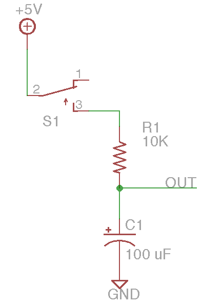

Understand an basic resistor-capacitor (RC) timing circuit.
Capacitance is a fundamental property of all bodies which describes their ability to store electrical charges. Capacitors are two-terminal electronic components engineered for specific capacitance properties. Capacitors are used for a variety of purposes in circuits, including energy storage, power supply smoothing, signal filtering, and timing.
Unlike resistors, the fundamental relation between voltage across a capacitor and the current flowing through it is described by a differential equation involving time. For this reason, capacitor circuits always involve an element of temporal behavior.
In this example, a resistor and a capacitor form a very simple timing circuit. When the momentary switch is closed, current flows through the resistor and charges the capacitor. As current stores charge in the capacitor, the OUT voltage rises. As the OUT voltage rises, the voltage drop across the resistor is reduced and so the charging current flow is reduced. This leads to a characteristic first-order exponential response in which the voltage climbs rapidly at first and then slows to asymptotically approach the source voltage, with a time constant of t = R * C. With the given values (10K Ohms and 100 microFarads), the time constant is 1 second, so the waveform will easily be seen on an oscilloscope and can almost be seen on a DMM.
Once the capacitor is charged and the switch is opened, it will hold charge and energy and the OUT voltage will ideally remain constant. Any real-life capacitor has a finite leakage, so in practice, the voltage will slowly decline back toward zero.
Capacitors come in both polarized and non-polarized varieties, depending on the type of material in use. In general, larger capacitors are electrolytic and are polarized, as in the diagram.
For a challenge, try adding a diode to create a simple envelope detector.
Modern touch screens measure the capacitance of a human finger touching the surface.
Very large capacitors can produce dangerously high currents and sparks when shorted. Extremely large “supercapacitors” have been recently developed for energy storage and are used in regenerative braking systems on electric vehicles to capture energy.
This is the barest scrape into the rich dynamic behavior possible with capacitor circuits. There are an endless number of analog filter and timing circuits using capacitors. A related component is the inductor which also has complementary dynamic behavior involving asymptotic current changes.
